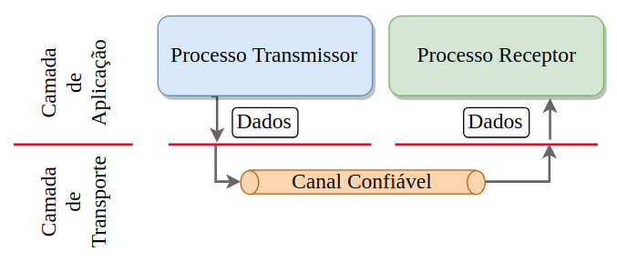
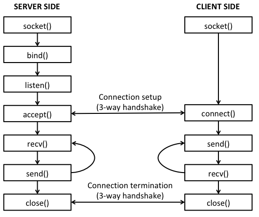

Universidade Atlântica
Programação por Sockets TCP
Aula 11
Programação Avançada
Universidade Atlântica
Aula 11
Fernanda Passos
Programação Avançada


from socket import *
# Numero de porta na qual o servidor estara esperando conexoes.
serverPort = 12000
# Criar o socket. AF_INET e SOCK_STREAM indicam TCP.
serverSocket = socket(AF_INET, SOCK_STREAM)
# Associar o socket a porta escolhida. Primeiro elemento vazio indica
# que desejamos aceitar conexoes em qualquer interface de rede desse host
serverSocket.bind(('', serverPort))
# Habilitar socket para aceitar conexoes. O argumento 1 indica que havera
# ate uma conexao em espera, caso receba multiplas conexoes simultaneas
serverSocket.listen(1)
print ('O servidor esta pronto para receber conexoes')
# continua...# Loop infinito: servidor eh capaz de tratar multiplas conexoes
while 1:
# Aguardar nova conexao
print ('Aguardando conexao...')
connectionSocket, addr = serverSocket.accept()
print ('Nova conexao recebida!')
# Recepcao de dados
print ('Aguardando dados...')
sentence = connectionSocket.recv(1024)
print ('Dado recebido do cliente')
# Processamento
capitalizedSentence = sentence.decode("ascii").upper()
# Envio
print ('Realizando envio...')
connectionSocket.send(capitalizedSentence.encode("ascii"))
# Fechamento
print ('Fechando socket...')
connectionSocket.close()from socket import *
serverName = 'localhost'
serverPort = 12000
# Criacao do socket
clientSocket = socket(AF_INET, SOCK_STREAM)
# Conexao com o servidor
clientSocket.connect((serverName,serverPort))
sentence = input('Input lowercase sentence:')
# Envio de bytes
clientSocket.send(sentence.encode("ascii"))
# Recepcao
modifiedSentence = clientSocket.recv(1024)
print ('From Server:', modifiedSentence.decode("ascii"))
# Fechamento
clientSocket.close()encode()decode()struct.pack(): gera byte a partir de um valor.
struct.unpack(): desfaz o pack, gerando uma tupla de valores.
| Formato | Tipo |
|---|---|
"i" |
int |
"I" |
unsigned int |
"l" |
long |
"L" |
unsigned long |
"f" |
float |
"d" |
double |
marshal.dumps(arg): converte elemento arg para bytes e os retorna.marshal.loads(bytes): converte bytes para o elemento correspondente e o retorna.randint do módulo random para escolher entre as 3 possíveis respostas.struct.